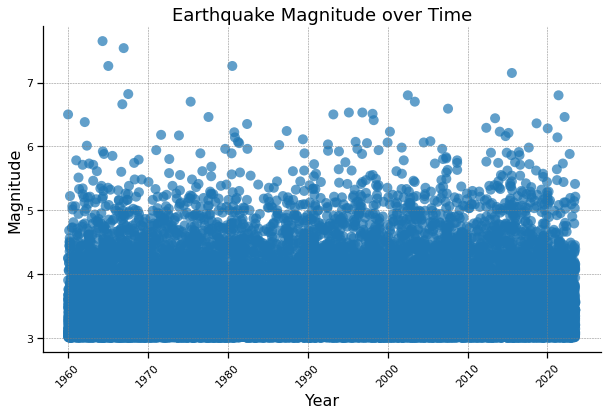
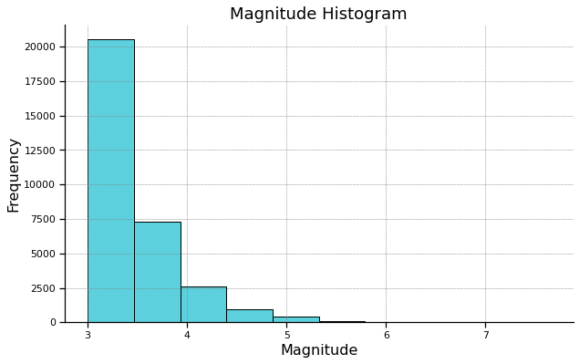
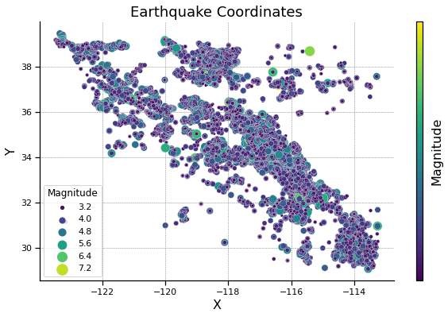

Input Data and Graphs#
We first began by formatting and graphing the results of ETAS to serve as a baseline for our model
Import Libraries#
import pandas as pd
import matplotlib.pyplot as plt
import matplotlib.cm as cm
import seaborn as sns
csv_file = 'Formatted_ETAS_Output.csv'
df = pd.read_csv(csv_file)
Data Table#
df.head()
| Date | Time | Year | X | Y | Magnitude | Z | |
|---|---|---|---|---|---|---|---|
| 0 | 12/31/59 | 0:03:09.00 | 1960.002196 | -119.0502 | 33.9790 | 6.50 | 8.2474 |
| 1 | 1/2/60 | 0:08:49.00 | 1960.006125 | -115.6222 | 33.0793 | 4.25 | 7.9322 |
| 2 | 1/2/60 | 0:10:31.00 | 1960.007305 | -115.6323 | 33.1220 | 3.03 | 8.4015 |
| 3 | 1/2/60 | 0:10:32.00 | 1960.007320 | -115.5851 | 33.0745 | 3.03 | 7.9678 |
| 4 | 1/2/60 | 0:11:07.00 | 1960.007720 | -115.6256 | 33.0290 | 3.08 | 7.9737 |
Scatter Plot#
plt.figure(figsize=(10, 6))
sns.set_context("notebook", rc={"font.size": 14, "axes.labelsize": 16, "axes.titlesize": 18})
sns.scatterplot(data=df, x='Year', y='Magnitude', color = '#1f77b4', edgecolor='none', s=100, alpha=0.7)
plt.xlabel('Year')
plt.ylabel('Magnitude')
plt.title('Earthquake Magnitude over Time')
plt.grid(color='gray', linestyle='--', linewidth=0.5)
sns.despine()
plt.gca().patch.set_facecolor('none')
plt.gca().set_frame_on(True)
plt.xticks(rotation=45)
plt.grid(True)
plt.show()

Histogram#
plt.figure(figsize=(10, 6))
sns.set_context("notebook", rc={"font.size": 14, "axes.labelsize": 16, "axes.titlesize": 18})
sns.histplot(data=df, x='Magnitude', bins=10, kde=False, color='#17becf', alpha=0.7, edgecolor='black')
plt.title('Magnitude Histogram')
plt.xlabel('Magnitude')
plt.ylabel('Frequency')
plt.grid(color='gray', linestyle='--', linewidth=0.5)
sns.despine()
plt.gca().patch.set_facecolor('none')
plt.gca().set_frame_on(True)
plt.grid(True)
plt.show()

Scatter Plot#
plt.figure(figsize=(10, 6))
scatter_plot = sns.scatterplot(data=df, x='X', y='Y', hue='Magnitude', palette='viridis', size='Magnitude', sizes=(10, 200))
plt.title('Earthquake Coordinates')
plt.xlabel('X')
plt.ylabel('Y')
plt.grid(color='gray', linestyle='--', linewidth=0.5)
sns.despine()
plt.gca().patch.set_facecolor('none')
plt.gca().set_frame_on(True)
sm = cm.ScalarMappable(cmap='viridis')
sm.set_array(df['Magnitude'])
cbar = plt.colorbar(scatter_plot.collections[0], aspect=40, ticks=range(int(df['Magnitude'].min()), int(df['Magnitude'].max())+1))
cbar.set_label('Magnitude')
plt.grid(True)
plt.show()
